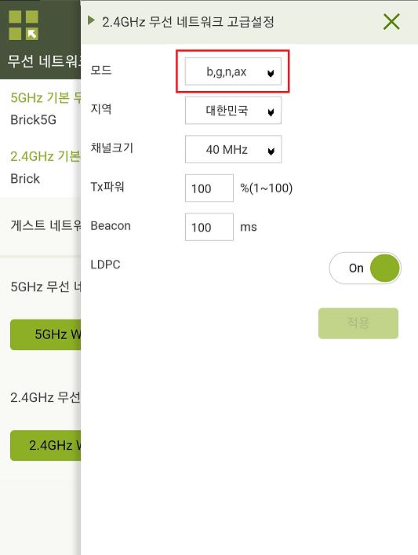

폰 어플 백업
사진, 영상 백업은?
QuickStar-상태표시줄 날짜 표시 갤럭시 스토어에서 굿럭 다운후 설치
크롬 다크모드 실험실 www.chrome://flags/
▶ 검색: Auto Dark Mode for Web Contents
https://revancedextended.com/ 유튜브리밴스드 익스텐디드
DP 얼터네이트 모드?
Trouble shooting
한영전환 문제
서피스독2 전력 문제 오류 메세지
보안폴더
유튜브 설치
모드 및 루틴
집 와이파이
오른쪽 핸들 넓이
폰 전체 설정
금융인증
스마트홈 허브 설정
사용하시는 공유기는 AX 설정이 포함된 6세대 공유기로 확인됩니다.
사용하시는 6세대 공유기의 경우 2.4Ghz 와이파이의 설정 변경이 필요합니다.
IPTIME 공유기 설정 페이지에 접속하여 설정 확인이 가능합니다.
IPTIME 2.4Ghz 와이파이를 핸드폰에 연결한 상태에서, 인터넷 새 창을 열어 아래 주소를 입력 후 이동해 주세요.
또는 핸드폰에서 [ipTIME Mobile Manager] 어플을 다운 후 확인 가능합니다.
ID : admin
PW : admin
기존에 관리자 페이지 아이디와 비밀번호를 변경하지 않으셨다면, 위 초기 아이디와 비번으로 접속 가능합니다.
로그인 후 [무선 네트워크 설정 - 2.4Ghz 기본 무선 네트워크 고급설정]에서 우측 화살표를 눌러 들어가주시면 됩니다.
[변경할 모드]
기존 설정 : b/g/n/ax >> 변경 설정 : g 로 변경하여 적용 부탁드립니다.
※ 적용 시 와이파이가 1~2분 정도 끊길 수 있습니다.
이후, 처음 핸드폰에 연결되어 있던 2.4GHz 와이파이를 자동연결 해제 후 삭제하셨다가
비밀번호를 넣어 재 연결해 주시고, 제품을 리셋하여 어플에 재 연결 부탁드립니다.
※ SD카드를 사용 중이거나, 앨범에 영상, 캡쳐본이 있을 경우 데이터가 삭제될 수 있습니다.
백업이 필요하시다면 SD카드를 분리하여 PC에 백업 후 진행 부탁드립니다.
추가적으로,
로그인 후 [무선 네트워크 설정 - 2.4Ghz 기본 무선 네트워크]에서 우측 화살표를 눌러 들어가주셨을 때,
인증 및 암호화 탭이 WPA2PSK + AES(권장) 로 설정되어 있다면, WPAPSK/WPA2PSK + AES으로 변경 부탁드립니다.
제품 리셋/연결 방법이 자세히 안내 된 링크 함께 전달 드립니다.
참고 부탁 드려요.
링크 : https://www.notion.so/goqual/5b0cfdda77d94bb3a7b7f8cf43f16b16

이전 버전 앱 안내드리겠습니다. 이전 버전 앱을 설치하신 후에 동일 증상이 있는지 확인 부탁드립니다.
사용하시는 태블릿에 현재 깔려있는 헤이홈 어플은 삭제하시고 아래 링크에서 파일을 다운 부탁드립니다.
어플 자동 업데이트가 되어 있다면 다시 업데이트 될 수 있어 자동 업데이트 설정은 꺼주시고 설치 부탁드립니다.
전달 드리는 파일은, 이전 1.2.5 버전이며 정식 버전입니다.
현재 구글 플레이스토어에 업로드 된 것이 아니기 때문에 출처를 알 수 없는 파일이라고 뜰 수 있습니다.
정식 버전이기 때문에 확인 하시고 다운 받아주시면 됩니다.
https://drive.google.com/file/d/1bXgzDlP5EySc9KaAUGkw-F9tWzckuoJq/view?usp=sharing